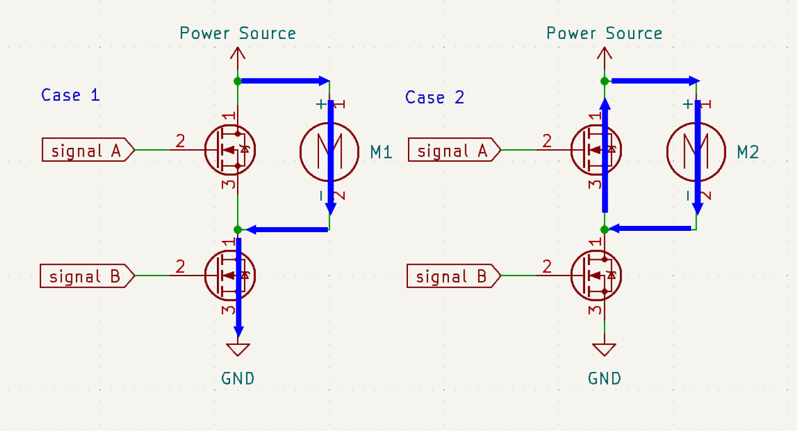
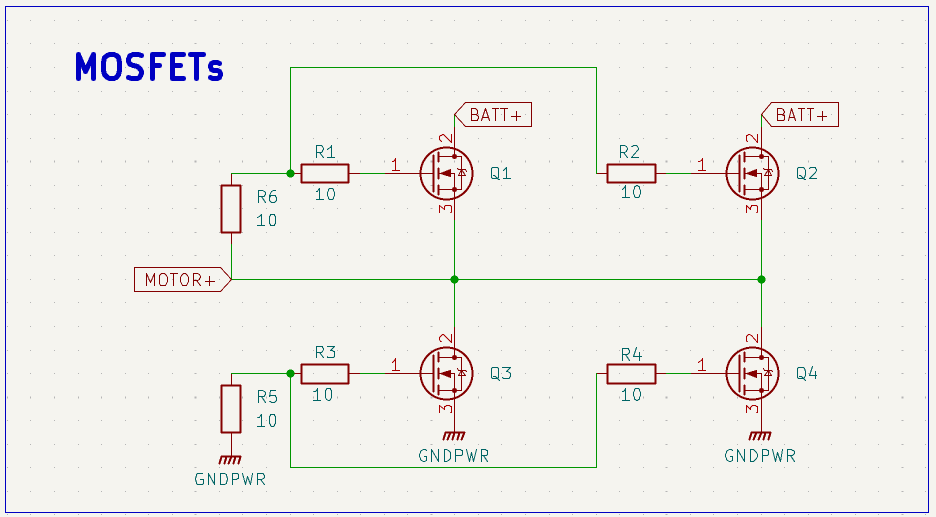
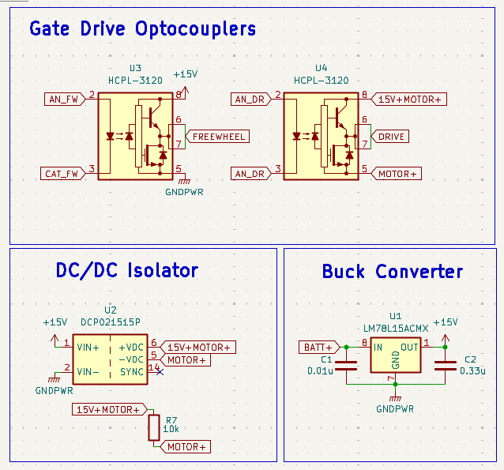
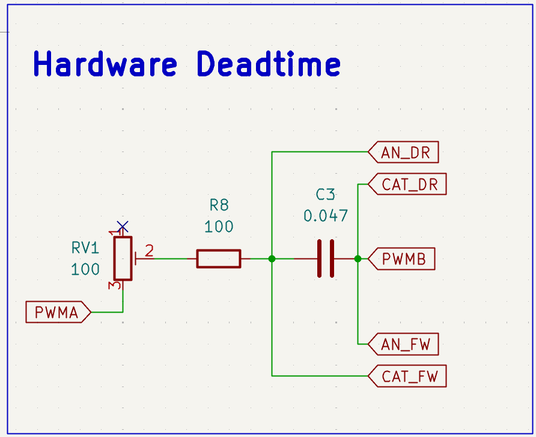
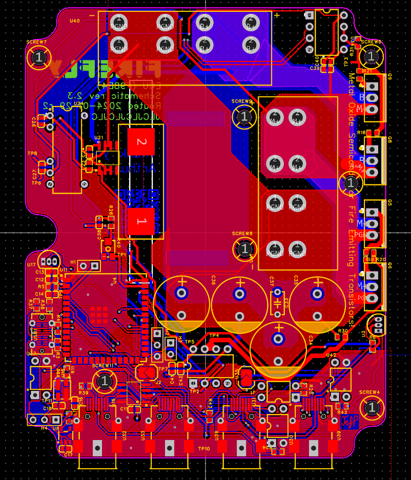
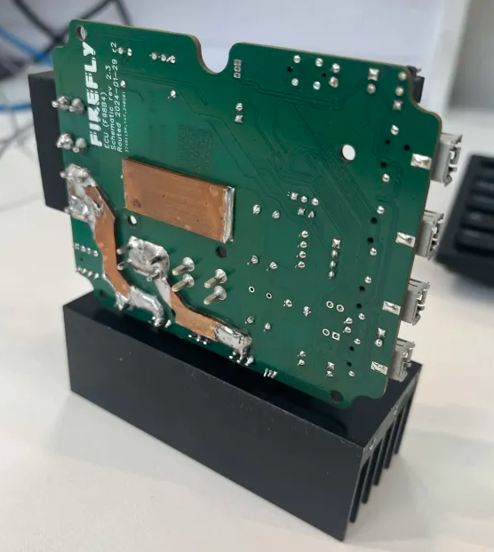
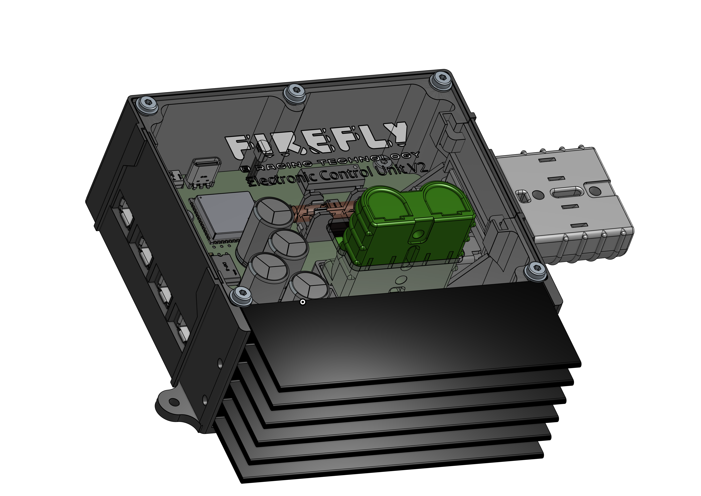
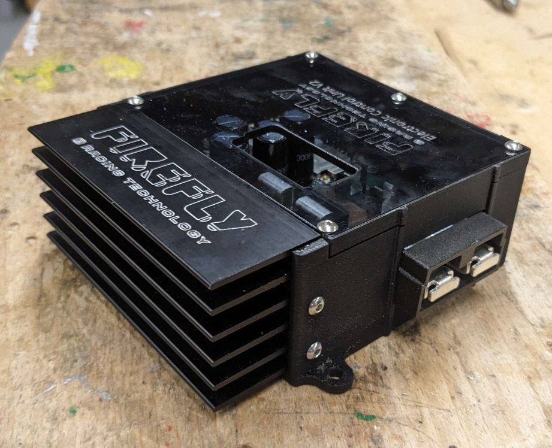

Luciferin pt2: Hardware design
Published
Welcome to the second article in this series discussing my design for a custom motor controller for Greenpower F24+. Although not required, I recommend that you have a read of Part 1 first, as it lays out some of the wider context and broader theory behind synchronous rectification and its uses in motor control.
Part 1 ended with this synchronous half-bridge, describing how current flows through the motor for each switching state.

At this level the circuit is well defined. At any given time one device conducts and one does not, and the motor sees the intended voltage. The difficulty only appears when attempting to physically realise those states.
A MOSFET is not commanded by a logic level but rather by a voltage relative to its own source terminal, and in high-side switching that terminal is not at a fixed voltage.
A common misconception I see, even among otherwise competent electronics engineers, is to treat a MOSFET as though it were a logic-controlled switch. This is understandable; in digital and low-side switching applications we model them that way constantly, and the abstraction usually holds. Early in this project I made exactly this mistake, which resulted in a modestly sized MOSFET graveyard and the device briefly earning the nickname Metal Oxide Semiconductor Fire-Emitting Transistor.
We must therefore control each MOSFET with a signal referenced to its own source terminal. For signal B this is trivial: it is the low-side device and its source is permanently tied to ground. For signal A, however, the source follows the switching node, so the drive signal must be referenced to a voltage that is itself moving.
The controller was designed from this constraint backwards, starting with what the power stage requires and only then determining how the microcontroller can interface with it. Once the problem is framed this way, the structure of the circuit largely determines itself. The schematic can be constructed by starting at the MOSFET gates and working outward.

The four MOSFETs implement the synchronous half-bridge from Part 1. In this implementation the high-side device performs the PWM switching, primarily to simplify routing of the power stage. Each gate includes a small series resistor to suppress ringing, and a pull-down resistor to ensure a defined off state in the absence of gate drive.
Each switch position uses two MOSFETs in parallel, reducing effective RDS(on) and distributing thermal stress between devices.
The low-side device can be driven directly, as its source is permanently tied to ground. The high-side device, however, requires a gate voltage referenced to the switching node. Since this node moves between ground and the battery voltage during normal operation, the drive circuitry must effectively “ride” on top of it.
This means the gate driver cannot share a ground with the microcontroller. It must exist in its own electrical domain, floating with the FET it controls, while still receiving timing information from the logic domain.

The buck regulator generates the 15 V gate-drive rail from the battery supply and is dedicated solely to the power stage. Keeping it separate from the logic rails prevents switching transients from propagating into the microcontroller supply.
That rail is then reproduced by the isolated DC-DC converter on the floating side of the circuit, referenced to the motor terminal. As the switching node moves, the entire gate-drive supply moves with it, ensuring the high-side device always sees a consistent gate-to-source voltage.
The optocouplers transfer the switching commands into this floating domain. They provide timing information only, allowing the gate driver to be controlled without introducing a shared electrical reference between the logic circuitry and the power stage. An additional benefit is the avoidance of ground loops between the switching currents and the control electronics. The mechanisms involved are left unexplored here in the interest of keeping this article to a readable length.
One final consideration remains before we can retreat back into the comparatively civilised world of embedded software: the inclusion of deadtime, briefly mentioned at the end of Part 1.
Deadtime is necessary to ensure the two devices in a half-bridge are never on simultaneously. My solution here was implemented in hardware, shown below. It works reliably and is, in a sense, quite elegant.

In hindsight this is probably my biggest design regret. The ESP’s MCPWM peripheral provides configurable deadtime directly, and using it would have produced a simpler and cleaner system overall. The hardware solution solved a problem the microcontroller was already perfectly capable of solving.
At this point the remaining schematic consists primarily of interface circuitry, connectors, external I/O isolation and a CAN transceiver. While necessary, they are not particularly specific to the motor controller itself, so a full breakdown is omitted here.
Download the complete ECU schematic (PDF)One page · 84 KB
At this stage the important details are spatial rather than schematic. The remaining design decisions are best conveyed visually, so the following images document the final routing and construction.




With the hardware completed, the problem shifts from survival to optimisation. Continue to Part 3 for the software: generating the drive signals and using external sensing, including airspeed, to decide how the motor should actually be driven.